Maandag 31 aug
sprint 0 (introductieweek), 1 (2 weken), 2 (2 weken), 3 (2 weken), retrospect VSCodium = vscode zonder MS Codeberg = github zonder MS Change logs - nieuwste bovenaan, loopt af in tijd geleden De checkout vragen voor vandaag: 1. Leg uit wat een source hosting platform is en voor welke jij gekozen hebt. - Een source hosting platform is een plaats om files op het internet te zetten. Ik heb Gitlab gekozen als mijn source hosting platform want daar had ik al een domein-omgeving. 2. Vertel welke domeinnaam jij gekozen hebt en hoe je die hebt gekoppeld aan jouw pagina. - Ik heb gekozen voor een domeinnaam waar ik al toegang tot had: christina.keultjes.net (een subdomein dat in de DNS instellingen is ingesteld om naar een andere map te gaan dat het hoofddomein.) Link: https://christina.keultjes.net/digital-garden/index.html 3. Beschrijf hoe je aanpassingen aan jouw pagina kunt maken en hoe je er voor zorgt dat die op het web gepubliceerd worden. - Door de files op de hostplaats te zetten kan bijvoorbeeld via een link naar deze files onder het hostdomein, zoals domeinnaam.nl/index.html In het geval van mijn pagina kunnen aanpassingen alleen geupload worden via het netwerk thuis, maar in de les kan ik mijn werk direct aan de docenten laten zien dus dat is geen beperking.Woensdag 2 sep
+ Workshop typografie 5 punten - Rekening houden met hoe groot het scherm of de poster zal zijn, en hoe groot de tekst daarop te zien zal zijn. - Hoeveel fonts mogen er zijn om niet afleidend te zijn. - Is leesbaarheid of gezelligheid belangrijker. - Font kiezen die diacritics kan laten zien, als die nodig zijn. - Ingewikkelde letters hebben een hoger resolutie nodig om goed te lezen te blijven. Bodoni wordt gezien als de chic-ste letter, maar kan lastig te lezen zijn, vooral op schermen Afbeelding 1 - Cowgirl - American dream - Texas - Jaren 80 - Houthakkers-print - Regulier persoon - Jolene Jolene Jolene (1973) Afbeelding 2 - Glam/chic - Special event - Marilyn Monroe stijl - Droombeeld - Geld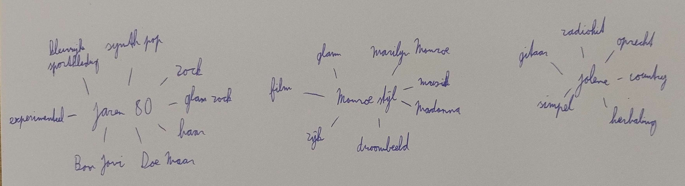
Typografie: font-family: Original Surfer; Balans tussen gegrond als een regulier persoon, met een experimenteel, energiek en vriendelijk randje + Workshop schetsen
Elementen van een goede schets:
- Simpel houden, niet te veel details
- Niet te veel tekst nodig om te begrijpen
- Minimaal kleurgebruik om de belangrijkste onderdelen te highlighten
- Poppetjes met simpel te lezen expressies en lichaamstaal
- Pijlen ter verduidelijking indien nodig
- Denkwolken om gedachtes te laten zien
Docenten vragen voor meer uitdaging bij het maken van de digital garden site
+ Workshop schetsen
Elementen van een goede schets:
- Simpel houden, niet te veel details
- Niet te veel tekst nodig om te begrijpen
- Minimaal kleurgebruik om de belangrijkste onderdelen te highlighten
- Poppetjes met simpel te lezen expressies en lichaamstaal
- Pijlen ter verduidelijking indien nodig
- Denkwolken om gedachtes te laten zien
Docenten vragen voor meer uitdaging bij het maken van de digital garden site
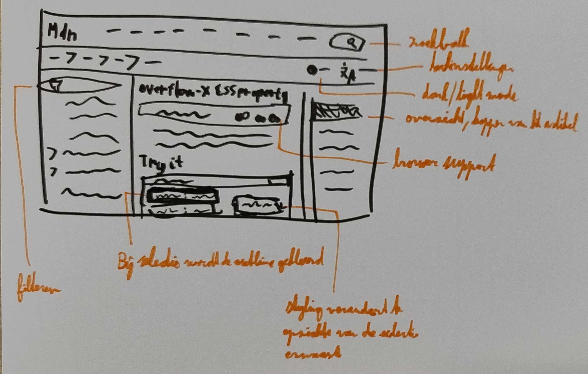
+ Leercoaching Waar wordt jij voor opgeleidt? - Ontwerpen voor een doelgroep - Sociale context onderzoeken - Plannen van een project Rechts: het tekenen van een klasgenoot: Maurizio Links: wapenschild dat laat zien wat ik belangrijk vind: kennis vergroten, vaardigheden verbeteren en het vermogen om zelf problemen op te lossen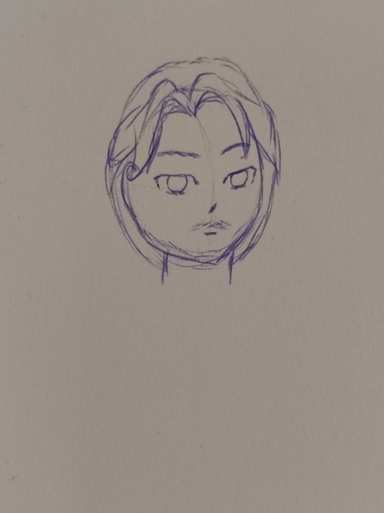
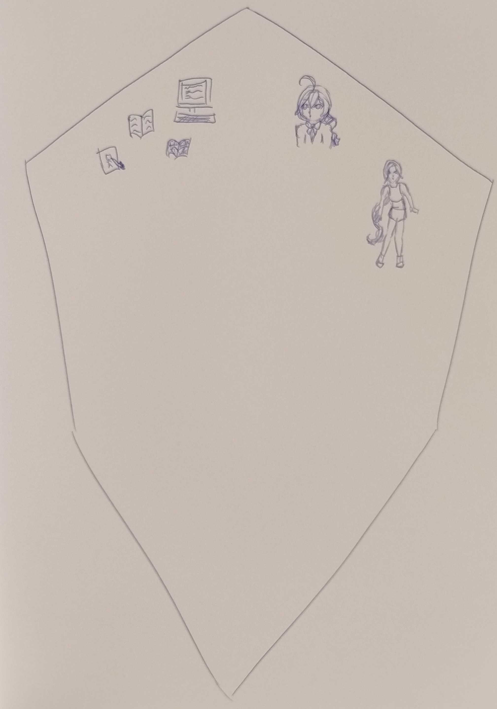
Vrijdag 4 sep
+ Workshop HTML & CSS Basics html5doctor.html strong en emphasis kennen wel semantische waarde, b en i niet, dus strong en emphasis horen vaker gebruikt te worden mark is als een highlighter Critical css en de rest css Container queries (of media queries) voor-responsive-op mobile en de rest + Workshop CSS fonts & effecten Google fonts als embed mag niet in Europa omdat daarmee data naar buiten Europa wordt gestuurd, maar die fonts kunnen wel gedownload worden en dat mag wel Opdracht uit de les: font-opdrachten.html


Maandag 7 sep
Wat is een digital garden? Volgens A Brief History & Ethos of the Digital Garden door onbekend. Digital garden: Low pressure en voor de vibes, kan zo netjes als je wil, low-medium effort, geen tijdsdruk, casual feedback geven en verwerken, altijd open voor groei, vrijheid vergeleken met de grote populaire platforms Vragen om de auteur te vragen: - Waarom staat er 6 jaar geleden, in plaats van het jaar? - Waarom staan de references niet in APA? - Mogen emoji's vrij gebruikt worden, legaal gezien? - Welke betekenis heeft een digital garden volledig opgezet door AI? Is dat nog steeds een digital garden? - Is een choose-your-own-adventure type boek een soort primitieve versie van een digital garden? - Zou een oceaan of helal niet passender zijn dan een tuin, omdat een oceaan onbekende dieptes heeft en het helal oneindig is, dat beetje bij beetje kunnen worden ontdekt (meer skills, kennis en ervaring), maar nooit volledig (de digital garden is nooit af want er zijn oneindige mogenlijkheden)? - Wat motiveert een mens om digital garden te verkennen in plaats van zich overgeven aan de eindeloze scroll op grote platforms? Is dat een verschil in doelgroep, waarbij die groep niet hoeft te worden aangesproken? Hoe kunnen de "juiste mensen" een digital garden vinden? Epistemologie is de studie van waarheid. In jouw tuin geef je context voor wat jij waarheid vindt en waarom je dat belangrijk vindt. Feedbackpunt op de huidige staat van mijn digital garden: Navigatie tussen de pagina's is niet helemaal duidelijk, door het express verstopte menu in de zijkant om minder in de weg te zitten, maar was na even kijken gevonden door de testpersoon. En de scrollbar onder de karakters is niet goed te zien omdat het zo klein is vergeleken met alles ernaast.

 Voorbeelden van Digital Gardens
Naam van website: Malice in wonderland https://maliceinwonderland.nekoweb.org/home.html
wel/niet fluide/adaptief: wel, de site is recent (25 augustus) geupdate en er zijn artworks op gezet in de 2026 categorie
wel/niet interactief/dynamisch: wel, omdat klikbare tekst logisch is en bij hover geeft het feedback. Niet, knoppen zijn zeer klein en onduidelijk
wel/niet toegankelijk: niet, constrast is laag, sommige onderdelen zijn zeer klein, de layout past zich niet aan op een mobiel scherm (door de site omschreven als "mobile hostile")
wel/niet volwassen: half, het is een fansite voor allerlei edgy en punk bands populair begin 2000. Wie toen kind was is nu volwassen maar heeft zich vast vastgehouden aan hun oude passies
wel/niet expressief: zeer expressief met kleurencombinaties, creatieve lettertypes, iconografie, heeft de uitraling van een passievolle in begin 2000 gemaakte site
wel/niet leuk/verassend: verassend dat de site nog online staat, en dat deze bands nog populair zijn
Voorbeelden van Digital Gardens
Naam van website: Malice in wonderland https://maliceinwonderland.nekoweb.org/home.html
wel/niet fluide/adaptief: wel, de site is recent (25 augustus) geupdate en er zijn artworks op gezet in de 2026 categorie
wel/niet interactief/dynamisch: wel, omdat klikbare tekst logisch is en bij hover geeft het feedback. Niet, knoppen zijn zeer klein en onduidelijk
wel/niet toegankelijk: niet, constrast is laag, sommige onderdelen zijn zeer klein, de layout past zich niet aan op een mobiel scherm (door de site omschreven als "mobile hostile")
wel/niet volwassen: half, het is een fansite voor allerlei edgy en punk bands populair begin 2000. Wie toen kind was is nu volwassen maar heeft zich vast vastgehouden aan hun oude passies
wel/niet expressief: zeer expressief met kleurencombinaties, creatieve lettertypes, iconografie, heeft de uitraling van een passievolle in begin 2000 gemaakte site
wel/niet leuk/verassend: verassend dat de site nog online staat, en dat deze bands nog populair zijn
 Naam van website: Hunipyon https://hunipyon.neocities.org/home
wel/niet fluide/adaptief: wel, laatste update 18 april 2026 over het willen oplossen van oude afbeeldingen. Niet, op mobile is alles onleesbaar klein.
wel/niet interactief/dynamisch: wel, klikbare tekst maakt de tekst wijd bij hover. Niet, geen knoppen met leuke functies
wel/niet toegankelijk: wel, goed contrast
wel/niet volwassen: wel, het aantal unieke visitors wordt bijgehouden
wel/niet expressief: zeer expressief met kleurgebruik en custom header
wel/niet leuk/verassend: de stukken in de headers achter de tekst zijn afbeeldingen
Naam van website: Hunipyon https://hunipyon.neocities.org/home
wel/niet fluide/adaptief: wel, laatste update 18 april 2026 over het willen oplossen van oude afbeeldingen. Niet, op mobile is alles onleesbaar klein.
wel/niet interactief/dynamisch: wel, klikbare tekst maakt de tekst wijd bij hover. Niet, geen knoppen met leuke functies
wel/niet toegankelijk: wel, goed contrast
wel/niet volwassen: wel, het aantal unieke visitors wordt bijgehouden
wel/niet expressief: zeer expressief met kleurgebruik en custom header
wel/niet leuk/verassend: de stukken in de headers achter de tekst zijn afbeeldingen
 Huidige ideeen voor het thema van mijn digital garden:
- Character archive als een in-game wiki maar dan interactiever
- Gesteente types presenteren dat ze super cool overkomen (want dat zijn ze maar de meeste mensen zien dat niet)
- "Welk karakter ben jij?" test zodat de bezoeker via leuke vragen een persoonlijke connectie kan maken met karakters waar ze normaal gesproken niet zo geinteresseerd in zouden zijn
- "Fansite" voor mijn karakters, zoals band fansites
Leuke punten om mee te nemen:
- Achtergronden met een patroon door een afbeelding te herhalen in body
- Headers met een plaatje als een bordje er achter
- Custom cursor
- Lijst met de series, boeken, spellen, liedjes en projecten waar de maker op dit moment mee bezig is
- Altijd een beetje beweging op het scherm, zoals GIF's van glitters en wezentjes
Inventarisatie: Ik heb al veel webpagina's gemaakt waarin ik het altijd leuk vind om game-invloeden te verwerken, dus dat wil ik ook in deze digital garden, en de "leuke punten" boven wil ik ook meenemen
Toon: Whimsy en game-invloeden
Content: Eigen content of royalty vrij (bv afbeeldingen via Pixabay)
Op welke manier is de content te ervaren: extra, verassend en creatief, dat vind ik leuk om te bedenken en maken
Na het rondkijken op allerlei verschillende sites voor het maken van de remark presentatie, heb ik veel manieren gezien waarop er wordt vormgegeven en atmosfeer gebouwd. Dit heb ik hier opgenomen.
Huidige ideeen voor het thema van mijn digital garden:
- Character archive als een in-game wiki maar dan interactiever
- Gesteente types presenteren dat ze super cool overkomen (want dat zijn ze maar de meeste mensen zien dat niet)
- "Welk karakter ben jij?" test zodat de bezoeker via leuke vragen een persoonlijke connectie kan maken met karakters waar ze normaal gesproken niet zo geinteresseerd in zouden zijn
- "Fansite" voor mijn karakters, zoals band fansites
Leuke punten om mee te nemen:
- Achtergronden met een patroon door een afbeelding te herhalen in body
- Headers met een plaatje als een bordje er achter
- Custom cursor
- Lijst met de series, boeken, spellen, liedjes en projecten waar de maker op dit moment mee bezig is
- Altijd een beetje beweging op het scherm, zoals GIF's van glitters en wezentjes
Inventarisatie: Ik heb al veel webpagina's gemaakt waarin ik het altijd leuk vind om game-invloeden te verwerken, dus dat wil ik ook in deze digital garden, en de "leuke punten" boven wil ik ook meenemen
Toon: Whimsy en game-invloeden
Content: Eigen content of royalty vrij (bv afbeeldingen via Pixabay)
Op welke manier is de content te ervaren: extra, verassend en creatief, dat vind ik leuk om te bedenken en maken
Na het rondkijken op allerlei verschillende sites voor het maken van de remark presentatie, heb ik veel manieren gezien waarop er wordt vormgegeven en atmosfeer gebouwd. Dit heb ik hier opgenomen.
Woensdag 9 september
Online les op het Miro bord Sfeerwoord: Educatief - Bereid zijn om te leren en daar plezier in hebben Ik kies dit woord omdat: Ik hou van nieuwe dingen leren en wil dat plezier delen met wie mijn site bezoekt Moodboard uitleg: (Aanzetten om te) Leren door spelen en plezier
- Tutorial voor het maken van een retro stijl voor het mooi maken van je projecten.
- Eigen site, spel om te leren over rivierdeltas.
- Tutorial in het spel Honkai Impact 3rd.
- Het spel Tax Heaven 3000 leert in de vorm van een dating sim over hoe je je belasting in moet vullen.
- Arjen Lubach leert kijkers over actualiteiten met humor.
- Mdn geeft informatie over code, zeer handig voor het maken van je eigen site.
- Spel over coderen door W3 Schools.
- De Minecraft handboeken over het spel.
- Neuro sama is een project dat mensen inspireert over techniek en coderen.
- The album Toxicity door System Of A Down zet luisterers aan om te leren over verschillende onderwerpen in de wereld.
- Een youtuber gebruikt Hatsune Miku om kijkers te leren over muziek maken.
- Schaken leert strategie door plezier.
- Minecraft Education Edition heeft extra functies bovenop het al educatieve basisspel, om schoolkinderen te leren over wetenschap.
- Een landschap in Bulgarije dat kan inspireren over geologie en hydrologie.
- Boeken houden kennis die iedereen met kennis van die taal kan lezen.
- Neuro sama is een project dat mensen inspireert om eigen projecten te coderen.
- Monty Python And The Holy Grail leert over geschiedenis met humor.
- Scratch leert kinderen de logica van coderen.
- het spel Uma Musume leert spelers over echte racepaarden, wat heeft geleid tot meer donaties in de racepaardsector.
Opvallende nieuwe dingen geleerd:
- code niet in 1 lijn is leesbaarder voor docenten
- backdrop-filter: blur(1.4px) voor beetje blur voor glasachtiger effect
- image-rendering: pixelated voor het pixelig houden van een pixel art afbeelding
- in html was er ooit een standaard bruikbaar marquee element waarmee leuke dingen gedaan kunnen worden, maar die is nu verouderd en niet voor gebruik in nieuwe sites.
Vragen:
- De meeste die voorbeeldsites's zijn ~copyright-schending galore~ Hoe ver moeten wij ons houden aan alles zelfgemaakt?
- Is de schaal van de site te groot? Zou het aangenamer zijn als het compacter was?
- Hoe volg je # , niet compleet aan de bovenkant maar net daar onder?
Moodboard uitleg: (Aanzetten om te) Leren door spelen en plezier
- Tutorial voor het maken van een retro stijl voor het mooi maken van je projecten.
- Eigen site, spel om te leren over rivierdeltas.
- Tutorial in het spel Honkai Impact 3rd.
- Het spel Tax Heaven 3000 leert in de vorm van een dating sim over hoe je je belasting in moet vullen.
- Arjen Lubach leert kijkers over actualiteiten met humor.
- Mdn geeft informatie over code, zeer handig voor het maken van je eigen site.
- Spel over coderen door W3 Schools.
- De Minecraft handboeken over het spel.
- Neuro sama is een project dat mensen inspireert over techniek en coderen.
- The album Toxicity door System Of A Down zet luisterers aan om te leren over verschillende onderwerpen in de wereld.
- Een youtuber gebruikt Hatsune Miku om kijkers te leren over muziek maken.
- Schaken leert strategie door plezier.
- Minecraft Education Edition heeft extra functies bovenop het al educatieve basisspel, om schoolkinderen te leren over wetenschap.
- Een landschap in Bulgarije dat kan inspireren over geologie en hydrologie.
- Boeken houden kennis die iedereen met kennis van die taal kan lezen.
- Neuro sama is een project dat mensen inspireert om eigen projecten te coderen.
- Monty Python And The Holy Grail leert over geschiedenis met humor.
- Scratch leert kinderen de logica van coderen.
- het spel Uma Musume leert spelers over echte racepaarden, wat heeft geleid tot meer donaties in de racepaardsector.
Opvallende nieuwe dingen geleerd:
- code niet in 1 lijn is leesbaarder voor docenten
- backdrop-filter: blur(1.4px) voor beetje blur voor glasachtiger effect
- image-rendering: pixelated voor het pixelig houden van een pixel art afbeelding
- in html was er ooit een standaard bruikbaar marquee element waarmee leuke dingen gedaan kunnen worden, maar die is nu verouderd en niet voor gebruik in nieuwe sites.
Vragen:
- De meeste die voorbeeldsites's zijn ~copyright-schending galore~ Hoe ver moeten wij ons houden aan alles zelfgemaakt?
- Is de schaal van de site te groot? Zou het aangenamer zijn als het compacter was?
- Hoe volg je # , niet compleet aan de bovenkant maar net daar onder?
Maandag 14 september
Hoofdvraag: Moeten kritieke internetdiensten in handen zijn van commerciele bedrijven? Deelvragen: 1. Wat valt onder kritieke internetdiensten? 2. Welke invloeden kunnen commerciele bedrijven hebben? 3. Wie heeft te maken met de gevolgen van kritieke internetdienst in de handen van commerciele bedrijven? 4. ...en wat zijn die gevolgen? 5. Valt onder commercieel bedrijf alleen het hoofdbedrijf of ook de bedrijven die daar onder vallen of waar het mee samenwerkt, bijvoorbeeld bij het opslaan in de cloud onder een ander bedrijf? Hoofdvraag: is toegang tot het internet een mensenrecht? (Deelvragen door een ander groepje) Onderzoeksmethodes: 1. Wat is een mensenrecht? - Guideline Conformity Analysis, bijvoorbeeld van onafhankelijke mensenrechtenorganisaties 2. Wie zou er geen toegang tot het internet mogen? - Focus group, mensen die uit een meer philosofische hoek kijken in plaats van een emotionele hoek 3. Wat verstaan we onder toegang? - Survey, iedereen breed kunnen vragen 4. Hoe belangrijk is het dat iedereen toegang heeft tot het internet? - Survey, verschillende mensen lopen tegen verschillende dingen aan. Daarna Guideline Conformity Analysis voor specifics 5. Hoe kan iemand misbruik maken van het internet en kun je rechten daar aan passen? - Expert, kijkt naar de situatie van bovenaf. (Is internetvrijheid een extensie van een eerder recht of een nieuw recht?) 30em maat voor mobiele schermen, onderdelen van die maat kunnen op pc naast elkaar Kolommen maken op brede schermen: grid-template-columns: repeat(auto-fit, minmax(15em, 1fr)); Bijvoorbeeld: body { display:grid; grid-template-columns: repeat(auto-fit, minmax(40em, 1fr)); } Asymmetrische kolommen op brede schermen: @media(width>40em) { grid-template-columns: 15fr 19fr; } - Dit heb ik meteen gebruikt op mijn site om de karakterinformatieblokken op de characters pagina naast elkaar bij 2 te zetten op een breed scherm, en 1 lange kolom op mobiel. [Voor] [Na op pc schermgrootte] [Na op mobiel schermgrootte]

 - Files ook op github zetten zodat de docenten er bij kunnen!
font size 16px is standaard (die 16px is in een browser 1 em)
+ Opdracht Van one column layout naar een-responsive-design
Met display:grid; grid-template-columns: repeat(auto-fit, minmax(15em, 1fr)); is het gelukt.
Op pc formaat staan alle 6 elementen op een rij, maar op mobiel formaat staan ze in rijen van 2.
+ Opdracht-responsive-voorbeelden zoeken
Via awwwards.com voorbeeldsites gevonden
https://nothingonpurpose.com
- Simpele papieren stijl in de graphics en vormgeving.
- Lijsten opgemaakt als papieren lijst met badges.
- Meest van de site is beige, waardoor de gekleurde highlights extra opvallen.
- Files ook op github zetten zodat de docenten er bij kunnen!
font size 16px is standaard (die 16px is in een browser 1 em)
+ Opdracht Van one column layout naar een-responsive-design
Met display:grid; grid-template-columns: repeat(auto-fit, minmax(15em, 1fr)); is het gelukt.
Op pc formaat staan alle 6 elementen op een rij, maar op mobiel formaat staan ze in rijen van 2.
+ Opdracht-responsive-voorbeelden zoeken
Via awwwards.com voorbeeldsites gevonden
https://nothingonpurpose.com
- Simpele papieren stijl in de graphics en vormgeving.
- Lijsten opgemaakt als papieren lijst met badges.
- Meest van de site is beige, waardoor de gekleurde highlights extra opvallen.
 https://www.mikes.cv
- Sterk in het thema van een vliegtuig, bv met locatiegegevens van Manchester, en het cv opgemaakt als een vliegroute
- Schakelen tussen light en dark mode door de schuif van het raampje op en neer te doen.
- Vliegtuigroute lijntje beweegt mee langs de functies die de persoon heeft gehad in de tijd, bij het naar beneden scrollen.
https://www.mikes.cv
- Sterk in het thema van een vliegtuig, bv met locatiegegevens van Manchester, en het cv opgemaakt als een vliegroute
- Schakelen tussen light en dark mode door de schuif van het raampje op en neer te doen.
- Vliegtuigroute lijntje beweegt mee langs de functies die de persoon heeft gehad in de tijd, bij het naar beneden scrollen.
 https://www.brookebeswick.com
- Sterren in de achtergrond reageren op de cursor.
- Vogeltje kan worden opgepakt en ergens anders op het scherm worden neergezet.
- Meer kunnen lezen over "What I bring to the table" door een skill letterlijk op een tafel neer te zetten.
https://www.brookebeswick.com
- Sterren in de achtergrond reageren op de cursor.
- Vogeltje kan worden opgepakt en ergens anders op het scherm worden neergezet.
- Meer kunnen lezen over "What I bring to the table" door een skill letterlijk op een tafel neer te zetten.
 Check-out
Leg uit wanneer een website 'lelijk' wordt en geef voorbeelden wat je kan doen om deze 'lelijke' onderdelen te fixen?
- Slecht te lezen lettertypes en groottes
- Onleesbaar kleurcontrast
- Geen margins en padding
- Geen persoonlijkheid
Vertel welke volgende stap je neemt om je website-responsive-te maken.
--responsive-met grid kolommen
Kun je het ontwerp en de bouw van je eigen Garden (zo uit je hoofd) onderbouwen in Webby vocabulair?
- Toegankelijk, tekstgrootte past zich aan aan de grootte van het scherm
Vrijdag (18 sep): Beoordelingsgesprek - Hoe webby is de site?
Check-out
Leg uit wanneer een website 'lelijk' wordt en geef voorbeelden wat je kan doen om deze 'lelijke' onderdelen te fixen?
- Slecht te lezen lettertypes en groottes
- Onleesbaar kleurcontrast
- Geen margins en padding
- Geen persoonlijkheid
Vertel welke volgende stap je neemt om je website-responsive-te maken.
--responsive-met grid kolommen
Kun je het ontwerp en de bouw van je eigen Garden (zo uit je hoofd) onderbouwen in Webby vocabulair?
- Toegankelijk, tekstgrootte past zich aan aan de grootte van het scherm
Vrijdag (18 sep): Beoordelingsgesprek - Hoe webby is de site?
Dinsdag 15 september
Huidige status van de site doornemen! Onderdelen van de site: - Garden/Hoofdscherm Mobielonvriendelijk omdat alles dezelfde viewport-width blijft in plaats van dat het veld naar beneden loopt, en het coole hover effect van de bloemen kan op mobiel niet worden ervaren door gebrek aan hover. - Characters Hoeft niks meer aan te worden toegevoegd, en is-responsive-met kolommen. - Aantekeningen Navigatie per dag kan erbij, tekstopmaak en afbeeldingsopmaak kunnen meer stijlvol. - Over Kan uitgebreid worden met meer plaatjes, maar dat is niet technisch dus geen prioriteit. Bij hover de bewegende "marquee's" laten stoppen met bewegen zou handig zijn. Is-responsive-met kolommen. Kan nog een "marquee" toevoegen met de afbeeldingen wat groter met recentere tekeningen in pen. - Remark presentatie vol inspiratie en links naar resources Op een bereikbaardere plek zetten dan alleen via de garden, hernoemen naar iets omschrijvenders zoals "inspiratie en resources." - Portfolio Was een oude pagina herbruikt, kan meer in de stijl van de site. Potentiele toevoegingen: - Nieuw hoofdscherm dat niet de garden is, meer in het thema van de "Windows 7 anime crossover" vibe die ik heb gemaakt op de characters, aantekeningen en over pagina's. Bloemanimatie kan worden hergebruikt, in ieder geval in de nieuwe versie van de garden. - Garden niet meer als hoofdmenu, maar koppelen aan het idee van inspiratie. Hoe een inspiratiebron letterlijk kan uitbloeien tot iets nieuws maken of leren. - Light/Dark mode met de "Windows 7 anime crossover" kleuren als de light mode, en als dark mode een thema gebaseerd op de mascotte Rosie met donkere tinten roze, bruin en groen. In de dark mode van mascotte Rosie kunnen ook wat transformatieve elementen worden meegenomen (is heel leuk om te maken) om een meer stijlvolle magical girl vibe te creëren.Woensdag 16 september
Basaal is een echt woord. Grids in architectuur zijn gebaseerd op de menselijke maat, grids in webdesign over het algemeen niet, daar moeten maten met elkaar te maken hebben, logisch uitgelijnd zijn en kloppend voelen voor de gebruiker. Bijvoorbeeld Pinterest heeft gelijke kolommen, maar de afbeeldingen in deze kolommen zijn allerlei verschillende lengtes, wat het levendiger maakt. Ook kun je om het minder grid-achtig te laten voelen de afbeelding niet recht neerzetten. - Moet ik schetsen hebben van de hele site??? - Css is handig in een eigen file als het hergebruikt wordt over verschillende pagina's, maar moet dat ook voor css die uniek is voor maar 1 pagina? - Ik heb alle afmetingen de hele site gedaan met vw, is er een makkelijke manier om dat om te zetten naar een unit die beter werkt voor mobile? - Hoe kun je de thema preference behouden tussen pagina's? Eindelijk gelukt om met een knop te kunnen switchen tussen dark en light mode door met een class die color-scheme: light is en de andere class die color-scheme: dark is. (Kan waarschijnlijk worden geoptimaliseerd naar 1 class die er of wel(light) of niet(dark) is).


 Check-out:
Noem 3 Gestaltprincipes op en laat de ander uitleggen wat ze betekenen en doen.
- Nabijheid, contrast in grootte, kleurcontrast.
Een grid biedt ruimte om te spelen (vrijheid), maar tegelijkertijd ook eenheid en structuur (vastigheid). Wat wordt hiermee bedoeld?
- Grid geeft je een structuur om elemtenten van je pagina in te zetten netjes uitgelijnd.
Welk principe neem je mee in een laatste iteratie van je ontwerp?
- Light-dark overal implementeren, met in beide thema's voldoende kleurcontrast.
Te doen:
- Het vastgelegde proces wat netter structureren in de aantekeningen zodat het duidelijker te volgen is voor de docenten.
- Portfolio pagina meer thematisch maken. De meest educatieve (voor de beschouwer) dingen die ik ooit heb gemaakt (PGED poster, propagandaposter en gacha-enquete, RWS en symposium, alles van PDAT) highlighten en de rest kan weg want die zijn minder relevant.
- Begin maken aan nieuwe hoofdpagina zoals gisteren omschreven.
- Files ook op github zetten voor vrijdag!
Vragen te stellen vrijdag:
Techvragen
- Css: alles eigen file of alleen wat meer dan 1 keer nodig is?
- Mobielvriendelijkere unit dan vw?
- # volgen en net daar onder terechtkomen in plaats van # compleet bovenaan?
- Thema preference behouden tussen pagina's?
- Hoe uploaden naar github op een manier dat de structuur intact blijft, github vindt 100 files in 1 keer te veel.
Opdrachtvragen
- Van alles schetsen maken?
- Suggestie dat meer uitdagend is?
- Hoe uploaden naar github op een manier dat de structuur intact blijft, github vindt 100 files in 1 keer te veel.
Check-out:
Noem 3 Gestaltprincipes op en laat de ander uitleggen wat ze betekenen en doen.
- Nabijheid, contrast in grootte, kleurcontrast.
Een grid biedt ruimte om te spelen (vrijheid), maar tegelijkertijd ook eenheid en structuur (vastigheid). Wat wordt hiermee bedoeld?
- Grid geeft je een structuur om elemtenten van je pagina in te zetten netjes uitgelijnd.
Welk principe neem je mee in een laatste iteratie van je ontwerp?
- Light-dark overal implementeren, met in beide thema's voldoende kleurcontrast.
Te doen:
- Het vastgelegde proces wat netter structureren in de aantekeningen zodat het duidelijker te volgen is voor de docenten.
- Portfolio pagina meer thematisch maken. De meest educatieve (voor de beschouwer) dingen die ik ooit heb gemaakt (PGED poster, propagandaposter en gacha-enquete, RWS en symposium, alles van PDAT) highlighten en de rest kan weg want die zijn minder relevant.
- Begin maken aan nieuwe hoofdpagina zoals gisteren omschreven.
- Files ook op github zetten voor vrijdag!
Vragen te stellen vrijdag:
Techvragen
- Css: alles eigen file of alleen wat meer dan 1 keer nodig is?
- Mobielvriendelijkere unit dan vw?
- # volgen en net daar onder terechtkomen in plaats van # compleet bovenaan?
- Thema preference behouden tussen pagina's?
- Hoe uploaden naar github op een manier dat de structuur intact blijft, github vindt 100 files in 1 keer te veel.
Opdrachtvragen
- Van alles schetsen maken?
- Suggestie dat meer uitdagend is?
- Hoe uploaden naar github op een manier dat de structuur intact blijft, github vindt 100 files in 1 keer te veel.
18 september
- Bij de assignment stond geen inleverdatum Retrospect 1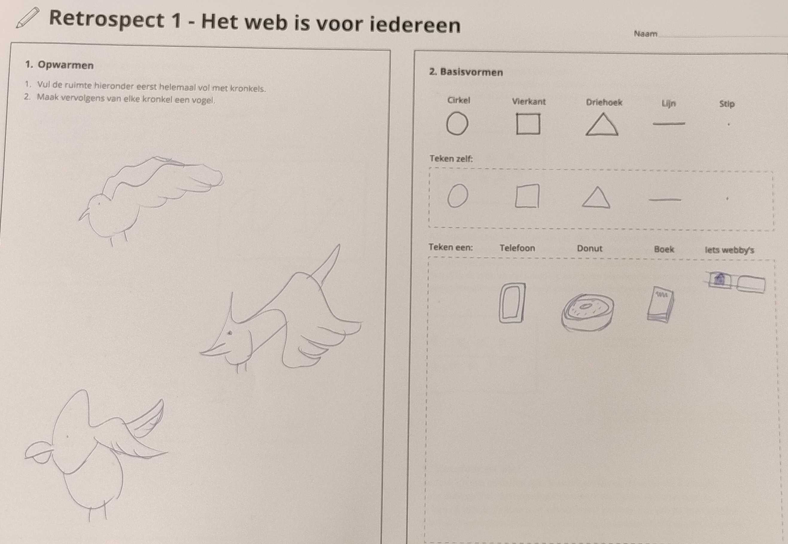
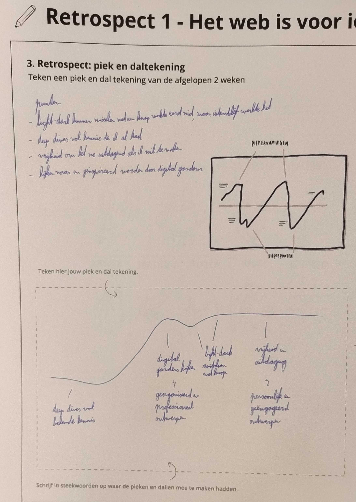
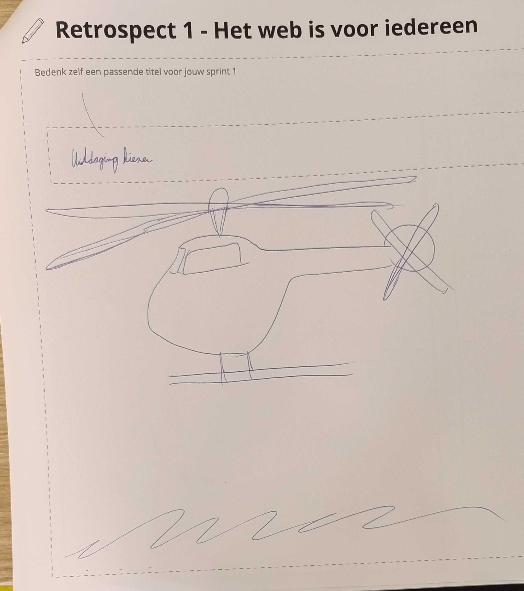
Feedback van de docenten - Je learning log is heel netjes verzorgd, houd dat vast! De kleuren van de personages in RGB laten zien dat je ook daar met de materie bezig bent. - Je kunt nog wat aandacht besteden aan visuele hierarchie. [Meer headers, mains, footers gebruiken. Alle elementen vragen even veel aandacht.] Misschien kan clamp() helpen bij het instellen van de maat van je type. Omarm ook een typografie systeem voor de grootte van letters. - Er is een deep-dive over kleur, daarin is uitgelegd hoe je custom-properties kunt toepassen. [bv in de deep dive --rood:crimson; ] - @font-face Ja, dit doe je op zich prima maar met een typeface die alleen op bepaalde browsers werkt. Laten we onderzoeken of we een typeface kunnen vinden die beter ondersteund wordt. (Was waarschijnlijk een typfout in base.css) Ook zag ik dat de cursor niet veranderde bij het hoveren over de light/dark en back-to-top knoppen, dat heb ik meteen opgelost door de btn-style class toe te voegen aan de elementen die dat triggeren (waar a, button, select al bij zaten).Check-out Competenties voor: Het web is voor iedereen Oriënteren en begrijpen Waarom geven de docenten deze opdracht? - De mogenlijkheden van het web leren via een onderwerp dat interessant is voor de leerling, waardoor het leren leuk is en op een natuurlijke manier de nieuwsgierigheid wordt aangezet. Welke technieken gebruik ik? - Html, css, js. Potentieel ook een beetje jquery als ik een meer ingewikkelde functie wil maken. Wat zijn de randvoorwaarden? - Leren met plezier - Webby: gestaltprincipes, toegankelijkheid, bronvermelding verwerken - Het gekozen onderwerp goed laten zien in het ontwerp en de ervaring Waar gebruik je HTML/CSS voor? - Html: structuur, waar alle elementen staan. - Css: opmaak van de elementen die in html staan om ze mooi en gezellig te maken. Wat kan er allemaal met CSS? - Heel veel. Voorbeelden van coole css heb ik vastgelegd in de remark presentatie, ook voorbeelden waar een pagina met resources te vinden is. Verbeelden en conceptualiseren Lukt het om verschillende ideeën te bedenken? - Veel voorbeelden bekeken Lukt het om je ideeën te schetsen? - Wanneer nodig. Wat doet deze CSS-property? - Mdn doorspitten brengt nieuwe technieken om te proberen. Welke content, en welke HTML heb ik nodig? - Navigatiebar voor navigeren. Hoe kan ik dit soort content vormgeven? - Css: margins, padding, kleuren, lettertypes, grids/flex, etc. Wat als ik hier nu eens 1000 invul? - Om te kijken of iets kleins werkt, kan het handig zijn om het eerst te groot en overdreven te maken Prototypen en uitwerken Begrijpen bezoekers de site? - Testpersonen observeren (of jezelf een week later wanneer je compleet bent vergeten wat je hebt gemaakt) Wat vindt de opdrachtgever er van? - De docenten zijn positief. Werkt dit wel? - Kans is groot dat iemand daar al over heeft gevraagd op Reddit of Stack Overflow, wat was beantwoord door aardige mensen met kennis. Oooooh, kan dit óók?! - Rondkijken in digital gardens en mdn brengen inspiratie Evalueren Reflecteren met the riddle: - Als ik iets interessants vind zoals een vraag, idee of oplossing schrijf ik dat op. Wat wil(de) ik weten/bereiken? - Als dat handig kan zijn voor later schrijf ik dat op. Wat heb ik gedaan? Wat was het resultaat? - Notities schrijven in de aantekeningenpagina en digital garden die ik wil bewaren (met afbeelding en link) in de remark presentatie Wat weet je nu (niet)? - Nieuwe vragen en inzichten schrijf ik op. Wat vond je (niet) leuk? - Schrijf ik op in de aantekeningen als het zo sterk is dat het handige informatie kan zijn voor later. Voldoet het nog aan de eisen? - Door te kijken naar mijn eigen inventarisatie wat er op iedere pagina moet gebeuren en welke ideeen ik heb daarvoor, weet ik weer welke kant ik op moet. Aantal regels HTML validatie - Alle tags netjes afgesloten. Soms zijn er specifiekere tags dan van alles dat geen img, a of p is, spans en divs maken. Zoals headers, mains, footers, etc. Toegankelijkheids-check - Voldoende contrast, maar hiërarchie kan beter en karakters hebben geen alt tekst. Is mijn website nog wel adaptief? - Light en dark mode is er. Layout verandert-responsive-tussen 1 en 2 kolommen gebaseerd op schermbreedte. Tekst is klein op kleinere schermen, maar dat kan met clamp() worden opgelost. Prefers-reduced-motion is niet getest, stopt misschien de marquee's. Voldoet mijn website nog wel aan de wet? - Alles of zelfgemaakt of Royaly-free via Pixabay. In de remark presentatie en aantekeningen staat netjes de bron bij iedere screenshot van een inspirerende andere site. Code-kennis heb ik zelf opgebouwd, geen AI. Geen tracking. Zie ik mezelf nog wel terug in wat ik doe? - Ja, terugkijken naar de ideeen die ik heb geschreven in mijn aantekeningen om de richting terug te vinden.
Kleuren naar variabele kleuren: inventarisatie Light mode: - middenblauw (hoofdkleur)rgb(85, 131, 210) - light-hoofdkleur - (knoppen kleuren)rgb(28, 60, 36), rgb(76, 137, 75), rgb(28, 60, 36) - groen (accent in vlakken)rgb(19, 94, 31) - light-accentkleur - donkerblauw (outline randen en box/text shadows)rgb(57, 79, 152) - light-outlinekleur - lichtblauw (border randen)rgba(174, 188, 236, 0.8) - light-borderkleur - bijna wit blauw (tekstkleur)rgb(233, 239, 239) - light-tekstkleur - blauw-groen-blauw gradient (hoofdcontainers)rgba(58, 108, 196, 0.6), rgba(151, 218, 103, 0.3), rgba(58, 108, 196, 0.6) - blauw-groen gradient (tekstcontainers)rgb(57, 79, 152), rgb(19, 94, 31) Dark mode: - donkerroze (hoofdkleur)rgb(132, 75, 85) - dark-hoofdkleur - (knoppen kleuren)rgb(28, 60, 36), rgb(76, 137, 75), rgb(28, 60, 36) - groen (knoppen highlight)rgb(76, 137, 75) - dark-knop-shine - donkerrood (niet-knop box/text shadows)rgba(94, 19, 43, 0.9) - dark-rood-outlinekleur - donkergroen (knoppen outline randen, box/text shadows)rgb(28, 60, 36) - dark-groen-schaduwkleur - lichtroze (border randen)rgba(236, 165, 165, 0.8) - dark-borderkleur - bijna wit roze (tekstkleur)rgb(233, 216, 216) - dark-tekstkleur - roze-rood-roze gradient (hoofdcontainers)rgb(159, 109, 97), rgba(245, 200, 200, 0.7), rgb(159, 109, 97) - roze-rood gradient (tekstcontainers)rgb(132, 75, 85), rgb(94, 19, 43) De kleuren van de light en dark thema's variabele namen gegeven. In de :root { --light-hoofdkleur: rgb(85, 131, 210); } En in de class met een kleur { var(--light-hoofdkleur); } - Hoe diezelfde kleur maar lagere opacity zoals de text-shadows en textContainers? (--light-hoofdkleur, 0.5) werkt niet.
19 september
Begin gemaakt aan de nieuwe home pagina. Er is meer onderzoek nodig naar grids of iets dergelijks om het ook mooi op mobiel formaat te hebben.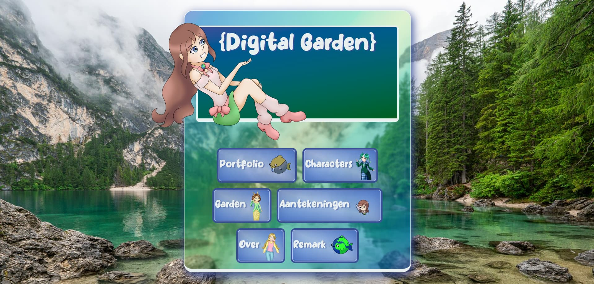
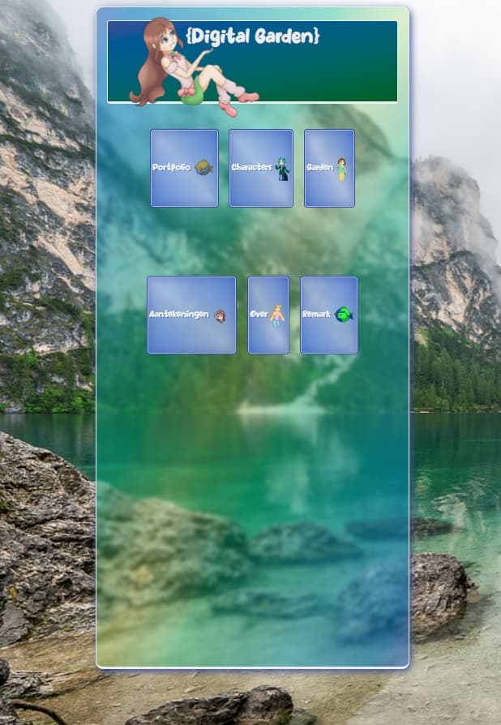
- Een paar aanpassingen in de opacity van de kleuren van de knoppen en achter tekst, voor het glasachtige effect consistenter toegepast. - Clamp() gebruikt op de font-size om ook de tekst ook een leesbare grootte te houden op mobiel.21 september
Header - h1, subtitel p Nav - nav (maar dan ook leesbaar voor screenreaders) Main - niet header. Reden waarom je naar de pagina komt Article - h2, p Footer - metadata: info over site (hoeft niet onderin) Hoe de huidige structuur ombouwen naar passendere tags: - .textContainer > article - #menu > nav - .gridColumnsContainer > main /************************** * MARK: Custom properties (=navigatiepunt in de file) **************************/ Grid uitlijning mooi: display: grid; grid-template-areas { "footer footer footer footer" ". header header ." ". main . ." } @media (width > 30em) { grid-template-columns: 1fr 3fr 1fr ". header ." ". main ." ". footer ." } - fr is fractie: de bv (1+3+1=)5 fracties worden verdeeld volgens grid-template-columns: 1fr 3fr 1fr Eigen variabele maken: --whitespace: 2em; --whitespace-small: 1em; --whitespace-xs: 0.5em gap: var(--whitespace); padding: var(--whitespace); nav { &:before { content: '~~imagine een icoontje~~' / 'De Digital Garden Webring in alt tekst vorm' } } Check-out - Html landmark role elements. Eerdere aantekeningen. - Heading elementen en hoe worden deze genest. Eerdere aantekeningen. - Hoe mee om. Als het niet mogelijk is om de site te gebruiken zonder op de primary action button te drukken ga ik weg van de site, heb ik altijd zo gedaan.22 september
Status - De indexpagina is vernieuwd naar de nieuwe in-thema homepagina - Webring knop werkt half (cookie pop-up en random verschijnen wel, next en previous niet) - Portfolio is nu in aanbouw Fun fact van de dag: animation-timeline: scroll(); animation-range: 0vh 90vh;23 september
- Het IP adress van de HvA is gebanned van Wikipedia editen door te veel vandalisme. Cookie situatie - Digitaal tuintje webring element: Codeberg hosting. - Hosting: Gitlab hosting. - Pixabay: royaltyvrije afbeeldingen zijn nu gelinkt maar kunnen ook gedownload worden. - Gedownloade versie van Yusei Magic font van Google Fonts. Vrij te gebruiken font First Coffee gedownload van DaFont. - Overig zelfgemaakt. Volgens de Nederlandse Autoriteit Persoonsgegevens: The ground rules are: - Provide information about the processing of personal data and the purpose thereof - Do not use pre-ticked boxes - Use clear and concise language - Present different choices on a single layer - Do not hide certain choices or make them less visible - Do not require extra clicks - Do not use inconspicuous links in the text - Make the withdrawal of consent as easy as giving consent - Do not confuse consent with legitimate interest Volgens LogRocket: To meet the California and EU law requirements, your cookie policy should state: - The type of cookies on your site (specify essential and non-essential ones) - What the cookies are used for (e.g., tailoring content or tracking behavior) - How long the cookies will remain active (e.g., session cookies deleted after browsing) or persistent cookies (active until expiration or deletion) - The type of personal data the cookies collect and process (e.g., browsing behavior, preferences, or device information) - Who the data is shared with and if it involves any third parties - How users can adjust their cookie preferences (e.g., opting out of non-essential cookies through the banner) Cookie aanbieden, die dan wordt afgewezen...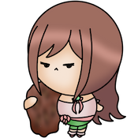
25 september
W3C validatie: correcte semantiek van html en css code. Correcte hmtl is handig voor toegankelijkheid en het onderhouden van de site. Maandag met screenreaders aan de slag. Is het nodig om op ieder element tabindex te zetten???? Feedback docenten - Cookie melding is in een passende stijl geschreven, maar "ga je akoord?" mag er nog bij - sommige divs horen een specifiekere tag te zijn - Retrospect tekening mag meer in de stijl van de site div .textContainer > article div #menu > nav div knoppen Back To Top en Light/Dark > button Html validatie Aantekeningen pagina - trailing slash op de link elementen hoort niet - alt tekst mist (wist ik al dat officieel moest maar had ik geen zin in) - in href, backslash (\) is blijkbaar verkeerd - h2 en hr horen niet binnen pre - in afbeelding paden horen geen spaties - marquee is obsoleet, MAAR dat is de reden waarom ik het er in heb gezet - bij directe css style horen geen spaties Characters pagina - trailing slash op de link elementen hoort niet - alt tekst mist (wist ik al dat officieel moest) - in href, backslash (\) is blijkbaar verkeerd - span in een table hoort niet Over pagina - trailing slash op de link elementen hoort niet - "CSS: background-image: linear-gradient(170deg, in oklch, var(--light-outlinekleur), var(--light-accentkleur)) is not a color value" maar het werkt prima dus welk gedeelte is het probleem????? - alt tekst mist (wist ik al dat officieel moest) - in href, backslash (\) is blijkbaar verkeerd - span in een table hoort niet Veel hiervan het ik meteen gefixt. Check-out Wat is HTML validatie, waarom is het belangrijk en hoe heb je dat vandaag uitgevoerd? - Het checken of code netjes is volgens de officiele richtlijnen. Welke dingen vielen je op? - In href hoort backslash (\) niet, h2 en hr horen niet binnen pre en span in een table hoort niet. Welke feedback heb je ontvangen tijdens het gesprek met je docenten? - Eerdere aantekening. Responsive maken van de pagina's op een manier dat het er nog steeds begrijpelijk uit ziet op een mobiel formaat door een combinatie van: - Grid (zodat elementen netjes naast elkaar passen op andere schermformaten) - Clamp (tekstgrootte dynamisch aanpassen) - Min- (zodat elementen groot genoeg blijven qua px) - Max- (zodat elementen zoals knoppen naast elkaar kunnen passen) - Media queries (in situaties waar die andere methodes net niet werken)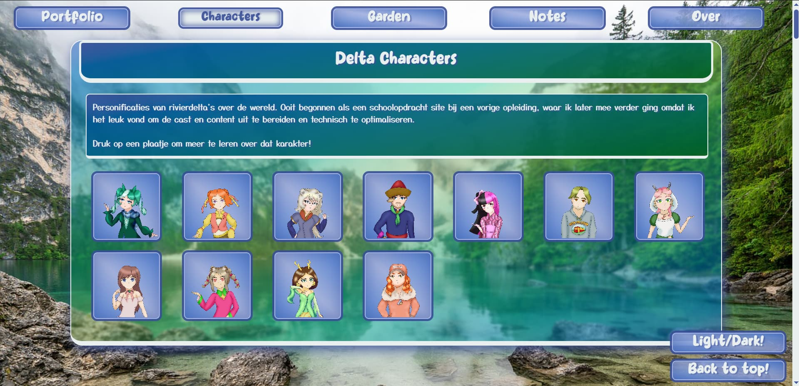
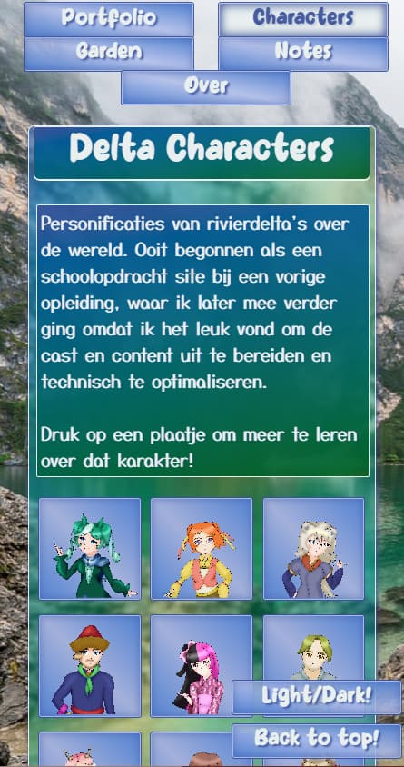
Ook had ik van het woord 'aantekeningen' in de navigatie 'notes' gemaakt omdat de tekst anders te lang is om binnen de knop op een leesbare grootte te passen op kleinere formaten.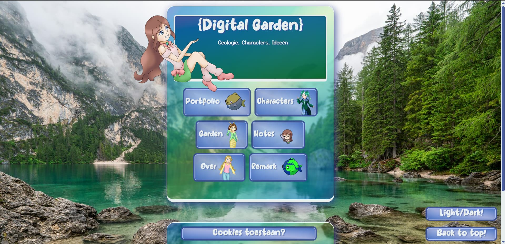
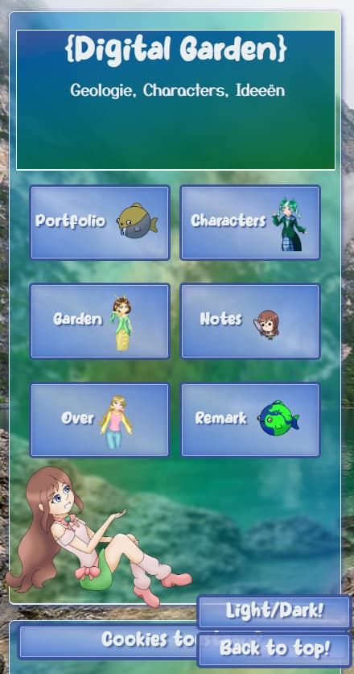
En de cookie melding past ook netjes.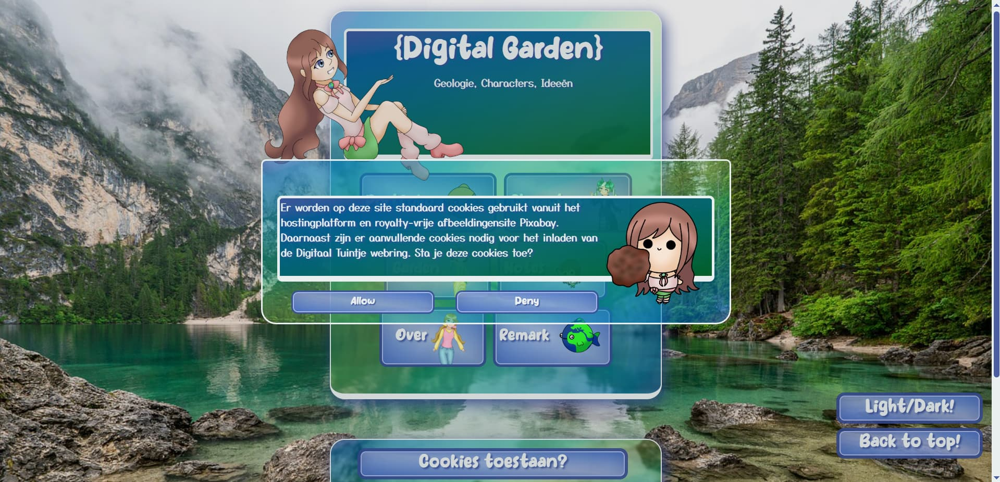
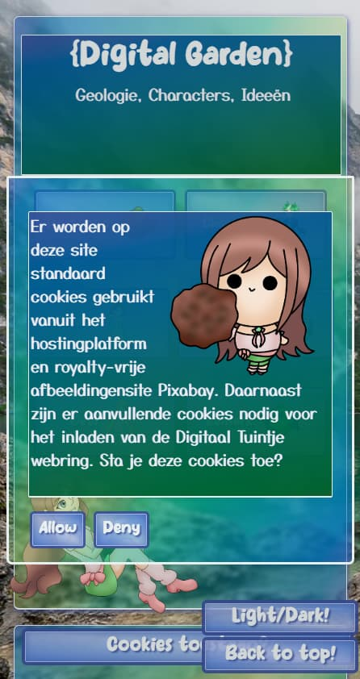
Huidige punten om aan te werken: - Meer interactie / bezigheidsmogelijkheden zoals spelletjes, tests, interessante informatie, klikbare gezelligheden, etc. - Remark presentatie kan ergens in de nieuwe garden - De nieuwe garden pagina, garden der inspiratie maken. De webring.js file wordt gezien als onveilig door gebrek aan https en kan daardoor niet worden geladen!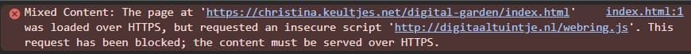
(Update: Blijkbaar was er in codeberg, waar webring.js op staat, een verandering plaats gevonden die de webring site had gebroken.)Maandag 28 september
Een pagina gemaakt met allerlei random interactieve elementen. Ik wil hier verschillende leuke interactieve dingen neerzetten. Nu staan er: - Huidige datum en tijd (volgens het systeem van de gebruiker) - D2 dobbelsteen, kan wat mooier. - Color picker waarmee met de html color picker een kleur kan worden gekozen, die als tekstkleur, hex code en rgb waarde wordt laten zien, op een achtergrond die automatisch of wit of zwart wordt om de tekstkleur leesbaar te houden. - Speler voor achtergrondmuziek terwijl je bezig bent met de interacties, functioneel maar kan wat mooier door de default controls helemaal te vervangen voor mooi custom. De vis draait rond tijdens het afspelen. Ik heb alle terms van de free-to-use muziek site (en eventuele extra's vanuit de specifieke producent) gelezen, dit mag, en de muziek is gemaakt door echte mensen. Ook heb ik netjes alle credits aangegeven.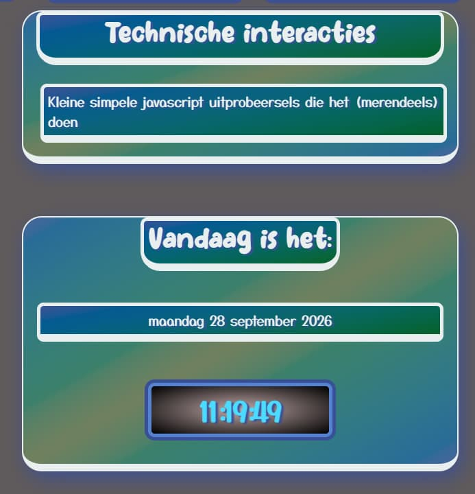
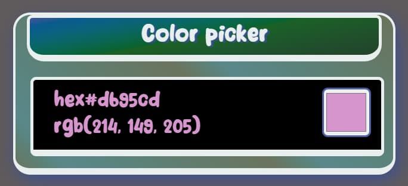
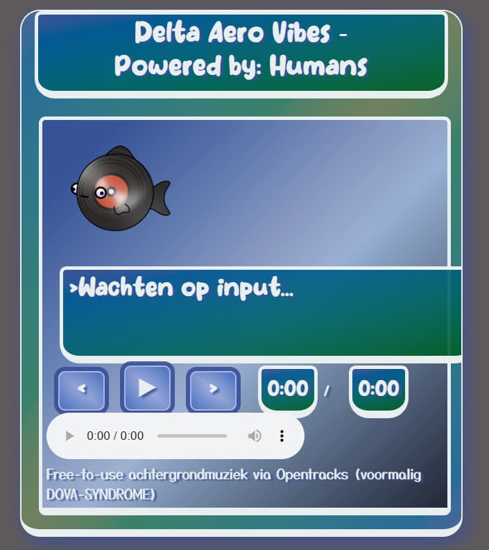
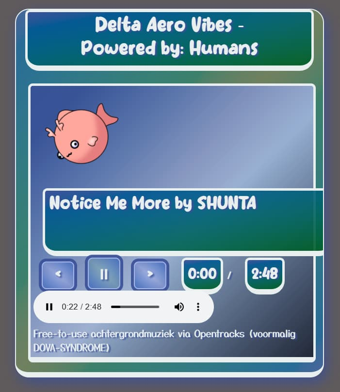
- Misschien is dit nu de garden van random stuff? Formulier is voor data versturen. Een color picker kan ook een formulier zijn. Input type = text (alleen letters op mobiel) of email (ook @ en . op mobiel) HTMLInputElement: showPicker() method Input type = color Input type = text, uit een datalist Link tekst moet duidelijk zijn op zichzelf Tab = Go to next tab stop Shift+Tab = Go to previous tab stop Check-out Wat bedoelt Vasilis met de uitspraak: Semantiek doet mij niet zo veel, ik ben liever bezig met de UX van HTML? - De namen van de tags zijn niet zo belangrijk als wat ze brengen qua funtionaliteit. Wat voor type beperkingen hebben invloed op het gebruiken van websites? - Visueel, Auditief, Motorisch, Cognitief Noem drie manieren om door een website te navigeren met jouw screenreader. - Luisteren, tab, shortcuts Na lang proberen is het eindelijk gelukt om de keuze tussen light of dark mode over te dragen tussen pagina's, door deze informatie te bewaren in localStorage! Het contrast tussen de kleuren en het glasachtige effect verbeterd, vooral in het light theme, zodat in vergelijking het dark theme minder intens is voor wie dat fijner is. Daarnaast is het gradient van de achtergrond van de karakterknoppen aangepast om het karakter qua compositie te centreren, wat de afbeelding leesbaarder maakt. Voor en na: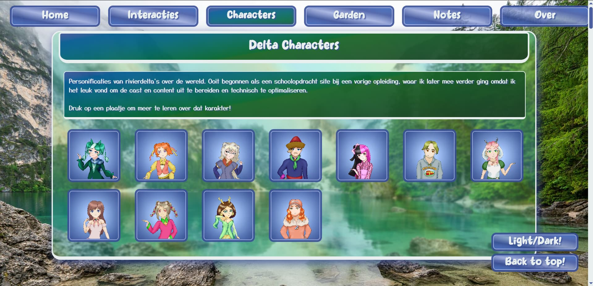
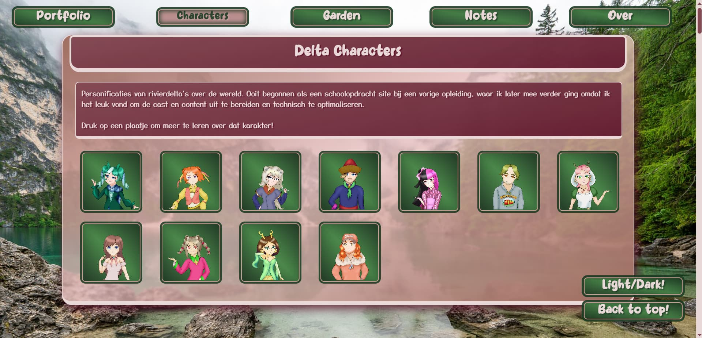
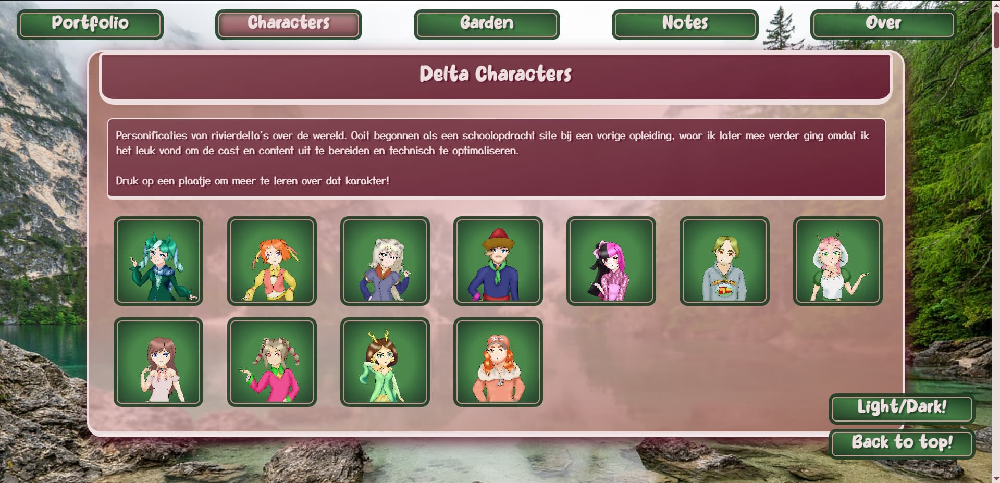
29 september
Ik wilde meer kleine tech experimenten maken, dus ik ging de deltakarakters langs voor inspiratie. Voor Tagha had ik een interactieve hond gemaakt die kwispelt en reageerd op een aaibeweging erover.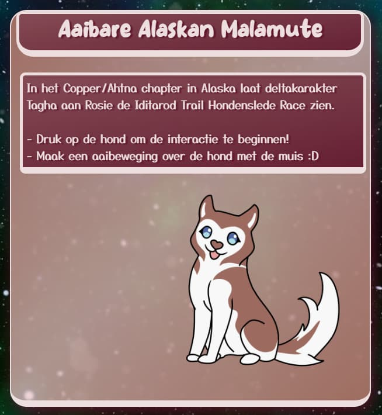
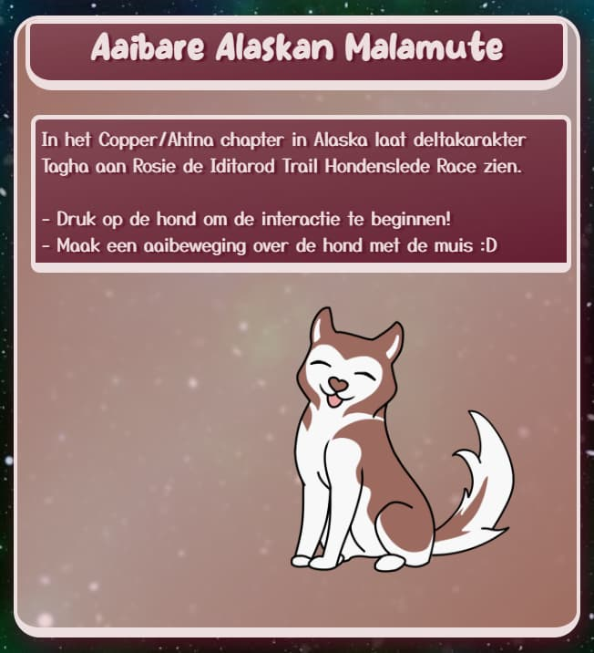
Bij het maken van al deze experimenten heb ik rekening gehouden met dat ze niet met elkaar (of met zichzelf als je onverwachte interacties-verricht) in conflict kunnen komen, en heb ik de bijbehorende javascript in apparte js files gedaan om het netjes te houden. De audio speler was zeer irritant om werkend te krijgen op de manier die ik wilde omdat er veel verschillende onderdelen in zitten die met elkaar te maken hebben (die elkaar steeds stuk maakten), maar eindelijk was het gelukt om het stabiel en robuust werkend te krijgen. Ook met een duidelijke error message als het nodig is.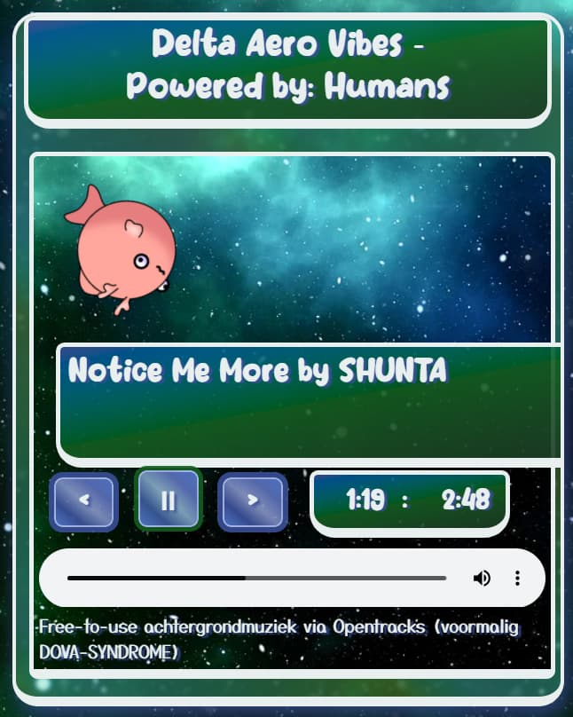
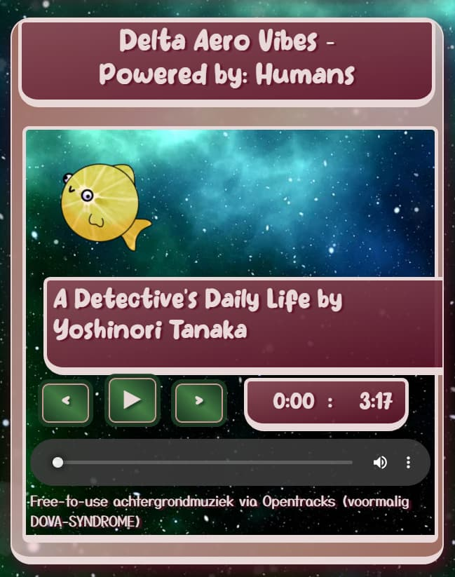
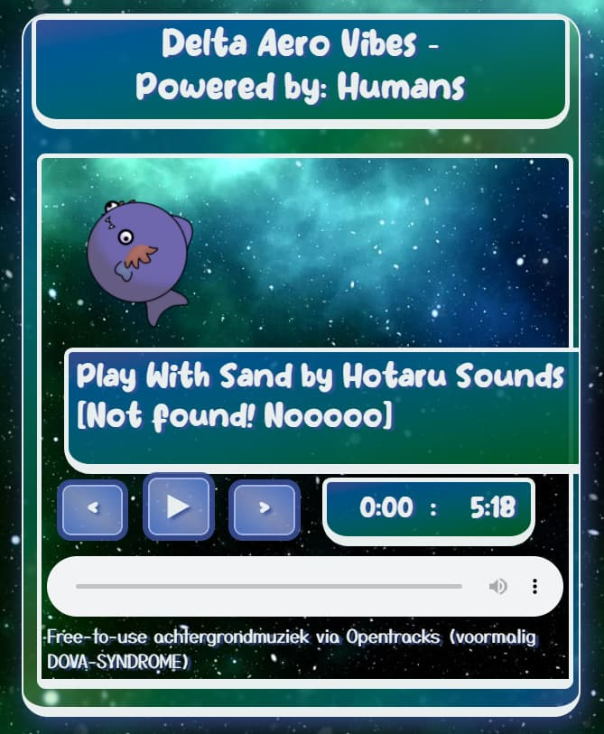
Untab = shift + tab - Portfolio is omgezet naar de interactieve experimentenpagina, misschien relevante portfolio stuff ergens anders zetten. - Home knop kan wat anders om duidelijker home te zijn. - Garden pagina is nu under construction, maar zal iets worden over hoe inspiratie leidt tot creatie. - Aan de dobbelsteen toevoegen dat de gebruiker (via een form) het type (d20, d6, etc.) kan kiezen.30 september
Niet-Tabbaarheid van de links oplossing: chrome (werkt niet in Vivaldi). OPLOSSING V2 WERKT WEL IN VIVALDI: Keyboard > Webpage Focus > Focus All Controls and Links.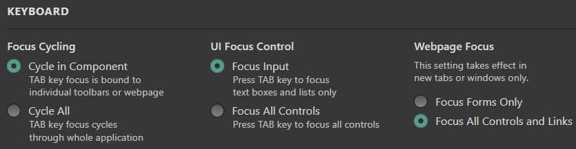
WCAG checklist Content Use plain language and avoid figures of speech, idioms, and complicated metaphors. - Gedaan: simpel taalgebruik, niet veel tekst. Make sure that button, a (links), and label (in forms) content is unique and descriptive. - Gedaan: buttons en links houden tekst die vertelt wat ze doen of waar ze heen navigeren. Global code Validate your HTML. - Gedaan met alle pagina's, meeste was prima, maar bijvoorbeeld lege alt-text voor decoratieve elementen was toegevoegd. Use a lang attribute on the html element. - Gedaan: nl. Provide a unique title for each page. - Gedaan: [titel pagina] - Digital Garden. Ensure that viewport zoom is not disabled. - Gedaan: initial-scale=1.0. Keyboard Make sure there is a visible focus style for interactive elements that are navigated (tab and shift + tab) to via keyboard input. - Gedaan, met hulp van docenten er achter gekomen dat dat niet volledig werkt in Vivaldi, maar wel in chrome. - Gedaan OPLOSSING V2 WERKT WEL IN VIVALDI: Keyboard > Webpage Focus > Focus All Controls and Links. Check to see that keyboard focus order matches the visual layout. - Gedaan: witte outline, sterk in contrast met de donkerblauwe outline van niet-gefocusde elementen. Mobile touch Check that the site can be rotated to any orientation. - Gedaan:-responsive-op alle formaten. Remove horizontal scrolling. - Gedaan: overflow-x: hidden; Ensure that button and link icons can be activated with ease (size and position). - Gedaan: blijven responive groot genoeg op alle formaten. Ensure sufficient space between interactive items in order to provide a scroll area. - Gedaan: witruimte om de onderdelen op pc, en tekstvlakken zonder per ongeluke interacties-op mobiel. Headings Use heading elements to introduce content. - Gedaan: h1 en h2. Use only one h1 element per page or view. - ... Kan opgelost worden door van de huidige h2, h3 te maken, van de huidige h1, h2 maken, en de h1 bovenaan h1 te laten. Heading elements should be written in a logical sequence. - Gedaan: eerst h1, dan h2. Don't skip heading levels. - Gedaan: eerst h1, dan h2. Lists Use list elements (ol, ul, and dl elements) for list content. - "Gedaan": geen list content. Images Make sure that all img elements have an alt attribute. - Gedaan: belangrijke afbeeldingen met omschrijvende alt tekst, decoratieve elementen null. Make sure that decorative images use null alt (empty) attribute values. - Gedaan. Provide a text alternative for complex images such as charts, graphs, and maps. - "Gedaan": geen charts, graphs, and maps content. For images containing text, make sure the alt description includes the image's text. - "Gedaan": geen afbeeldingen met tekst. Media Make sure that media does not autoplay. - Gedaan. Check to see that all media can be paused. - Gedaan. Video – Confirm the presence of captions. - "Gedaan": geen video content (kan misschien een mooie player maken voor de jaren geleden zelfgemaakte Slinky kerst ad). Audio – Confirm that transcripts are available. - "Gedaan": geen gesproken audio content. Controls Use the a element for links. - Gedaan. Ensure that links are recognizable as links. - Gedaan: staat in nav bar. Ensure that controls have :focus states. - Gedaan: op alles dat klikbaar is. Use the button element for buttons. - Gedaan. Provide a skip link and make sure that it is visible when focused. - Gevonden: a class="focusable visually-hidden" href="#main-content">Skip to main content/a> Identify links that open in a new tab or window. - "Gedaan": geen links that open in a new tab or window. Appearance Check if dark and light mode are supported. - Gedaan. Check if high-contrast mode is supported. - Gedaan: alles is leesbaar en links zijn duidelijk. Increase text size to 200%. - Gedaan: elementen en tekst wordt groter. Make sure color isn't the only way information is conveyed. - Gedaan: tekst met voldoende contrast. Animation Ensure animations are subtle and do not flash too much. - Gedaan: alle animaties zijn langzaam en kunnen worden gestopt. Provide a mechanism to pause background video. - "Gedaan": geen achtergrondvideo content. Make sure all animation obeys the prefers-reducedmotion media query. - ... Color contrast Check the contrast for all normal-sized text. - Gedaan: door de pagina is zwart-wit te bekijken, contrast is voldoende leesbaar. Check the contrast for all large-sized text. - Gedaan: door de pagina is zwart-wit te bekijken, contrast is voldoende leesbaar. Check the contrast for all icons. - Gedaan: contrast is voldoende leesbaar, iconen zijn of veel lichter of veel donkerder dan de knoppen waar ze op staan. Check text that overlaps images or video. - Gedaan: tekst staat naast afbeeldingen. Check custom ::selection colors. - Gedaan: in aantekeningen zijn er custom selection kleuren gebaseerd op of light of dark mode aanstaat. Checkout Waar staat WCAG en A11y voor? - WCAG = Web Content Accessibility Guidelines - A11y = A: Essential, AA: Ideal Support, AAA: Specialized Support Wat vind je lastiger, je laptop/websites alleen met een toetsenbord bedienen of met een screenreader? Waarom? Waar moet je nog mee oefenen? - Screenreader, duurt lang. Met welke beperking rekening houden vind je het meest lastig? - Screenreadergebruiker. Maar kan met een visually hidden element (met tekst "to main content" zodat de screenreader deze optie kan lezen) dat href't naar de main content userfriendlier worden gemaakt. Vind je dat je beperkt wordt in wat je kunt ontwerpen? - Nee, want een toegankelijk design is beter voor iedereen, zoals voldoende contrast dat leesbaarder is voor iedereen. Of heb je al manieren gevonden om vanuit een solide basis - die voor iedereen toegankelijk is - allemaal leuke en mooie extra's toe te voegen als je bezoekers dat goed vinden? - Nog sterker contrast geeft naast betere leesbaarheid ook een levendigere en dynamischere uitstraling. Daarnaast zou ik de compositie van de achtergrond van de karakterknoppen niet hebben aangepast als ik niet in grayscale had gezien dat het glim-effect de karakterafbeelding leek te laten verdwijnen, waarbij de vernieuwde versie ook in kleur beter leesbaar is. Punten om nog naar te kijken: - Spaties uit de afbeelding files namen halen (hoeft alleen nog te worden gedaan met screenshots). - Hoofdletters uit de afbeelding files namen halen. Na onderzoek kwam ik er achter dat Linux systemen case sensitive zijn (niet-Linux systemen niet), dus voor toegankelijkheid voor Linux nerds moeten hoofdletters er ook uit. - Afbeeldingen van de remark presentatie en aantekeningen in hun eigen aparte folder zetten. - De font-opdrachten pagina (uit de deepdive eerste week) bereikbaar maken, via een link op de aantekeningenpagina. - De focus houden op optimalisatie, in plaats van een eindeloze stroom van steeds nieuwe dingen die niet even geoptimaliseerd zijn. - Bij de docenten aangeven dat ik volgende week (de week van 5 oktober) met het Blended Learning programma in Oosterijk ben en daarmee niet op school ben.Maandag 2 oktober
Pieken en dalen: punten - Speciale pagina gemaakt voor allerlei interacties, om gebruik te maken van alle tags die in de les langskomen - Muziekspeler bleef breekbare onderdelen te hebben, duurde lang om alle niet-netjesheden eruit te halen, maar uiteindelijk werkt het precies zoals het hoort en breekt niet. - Tab toets navigatie deed het niet volledig, zelf uitzoeken en de docenten laten uitzoeken werken niet, bleek uiteindelijk een setting in de browser te zijn. - WCAG was merendeels al in orde Titel voor het metafoor: "That time I reincarnated as a spinning fish in the digital garden of the delta king."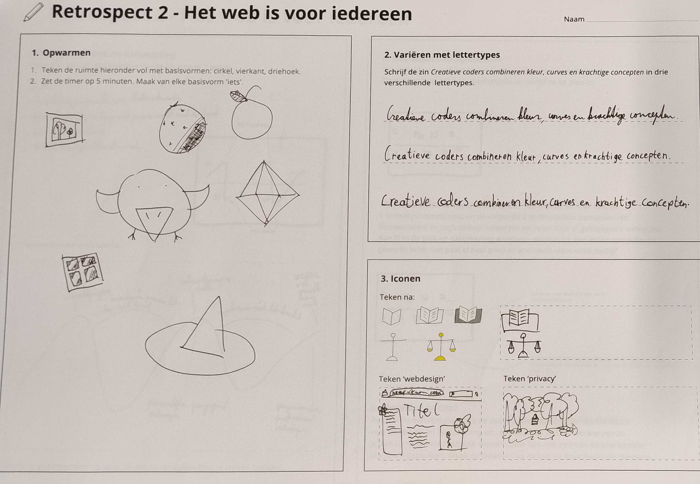
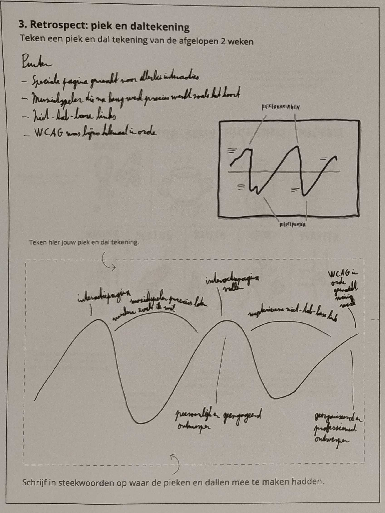
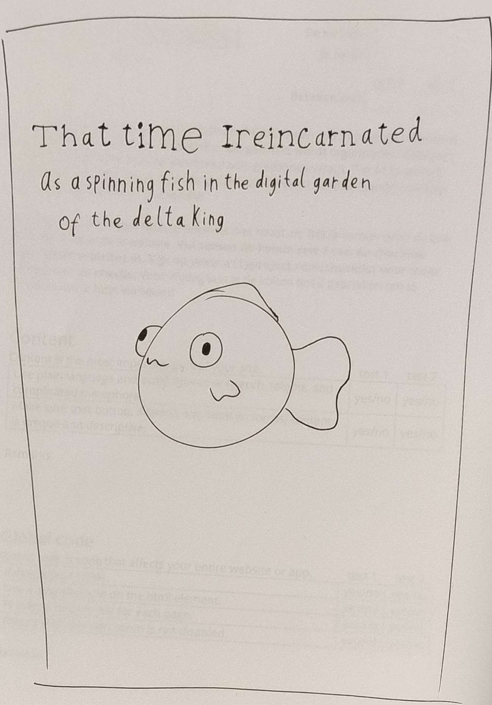
Gebaseerd op de trend in anime dat titels steeds langer worden en opmerkelijk veel daarvan beginnen met "That time I reincarnated as a..." gevolgd door een hele lange (voor een titel) en specifieke omschrijving. Dit is verbonden met de pieken en dalen afgelopen periode, omdat de vis eerst een normale vis was, maar na reincarnatie een vis met een Doel (spinning) en Plaats (digital garden) werd: De creatie van hoe precies het Doel toegankelijkheid kan worden bereikt (door de WCAG) en op welke Plaats files horen te staan (plaatjes netjes in folders met valide namen. Css en js in ieder eigen files) Feedback van de docenten - Css en js die alleen op 1 pagina staan ook in een eigen bestand [tijdens vorig feedbackmoment had ik hier specifiek naar gevraagd en toen was het goed om het zo te doen, maar nu niet meer?]. - Voorbeelden en oude versies eruit halen. - div gridcolumnsContainer > main gridcolumnsContainer - Meeste br's tussen elementen heb ik er al uit gehaald na het implementeren van de grid containers, maar een paar staan er nog en kunnen weg omdat ze niks meer doen. - Cookie notice hoort bereikbaar te zijn op alle pagina's - Knoppen zijn zeer letterlijk (back to top en light/dark doen precies wat ze zeggen te doen), kan ook met iconen - Tab focus opmaak beter contrast geven [kan de code van de dynamische achtergrond van de color picker misschien hergebruiken om te reageren op de kleur er achter] - Homepagina heeft een goede accesibility score, de rest van de site nog niet. - Reduced motion wordt niet gebruikt, animaties lopen door. - Squoosh - afbeeldingen verkleinen - Alles dat werkt als header, header van maken (h1, h2, h3, etc.) - In de "knoppen" met characterafbeeldingen, de afbeelding in de a zetten met css. Screenreader tekst voor de link in een span zetten. - Test met de screenreader nog doen. 262 mb aan afbeeldingen... De zwaarste zijn schermafbeeldingen van inspirerende sites uit de remark presentatie folder, dus daar was ik begonnen met alle afbeeldingen door Squoosh halen. Na squoosh is die map nog maar 48 mb! Daarna heb ik in de folder met chibi's de mooiste gekozen en de rest weggedaan, omdat daarvoor alles dat ik kon vinden erin zat. Uit deze afbeeldingen heb ik de exesieve witruimte uitgeknipt, en zijn ze nu allemaal dezelfde grootte. Na deze en de rest van de afbeeldingen ook door Squoosh halen is de images map maar 40 mb, 18% van de oorspronkelijke grootte! Geen check-out vandaag. - "Waar komt deze code vandaan?" Mijn eigen brein dat kennis opslaat en dat op nieuwe manieren kan arrangeren???? Hoe kan ik bewijzen dat ik alle code zelf heb geschreven? Ik heb dit gedaan met eigen voorkennis, en door op MDN elementen te lezen en uit te proberen, en bij vragen die ik heb antwoorden bekijken op Stackoverflow of Reddit. Ik heb geen AI gebruikt hiervoor. Ik kan zelf uitleggen wat alle code doet, omdat ik alleen code gebruik die ik snap (anders kun je er niet op voortbouwen of bewuste aanpassingen aan maken, en ik hou van precies weten wat wat doen), en als ik het niet snap, ga ik onderzoeken hoe het werkt en combineer ik dat met eerdere kennis.